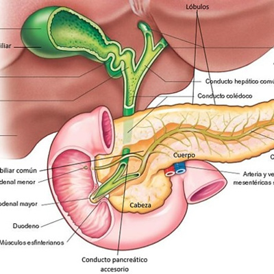
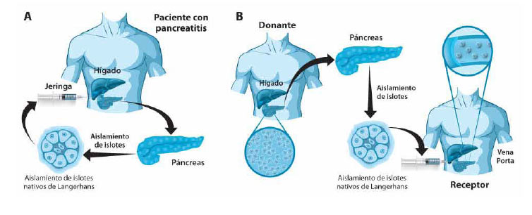

| Ingeniería de tejidos: Se utiliza células madre o precursoras para crear tejido pancreático funcional en laboratorio. Estas células se diferencian en células específicas del páncreas, como las células beta productoras de insulina, y se cultivan en estructuras tridimensionales similares a un páncreas. |  |
|  | Xenotrasplante: Se trasplanta tejido pancreático de especies animales, como cerdos, en humanos. Sin embargo, se enfrentan desafíos de compatibilidad inmunológica y riesgo de rechazo del tejido xenotrasplantado. |